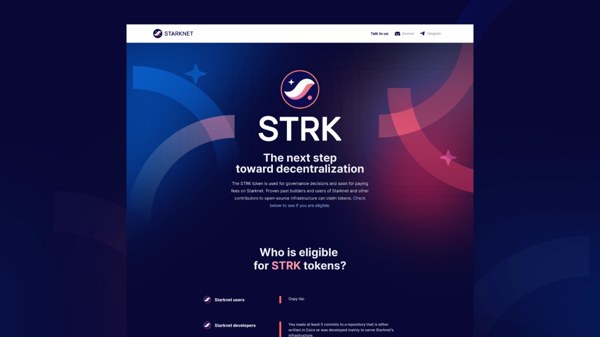
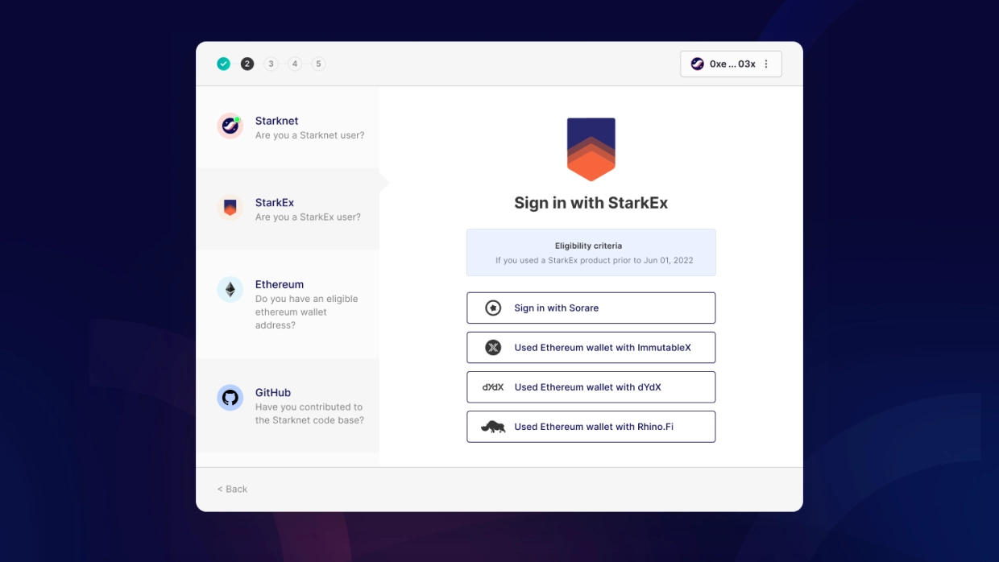
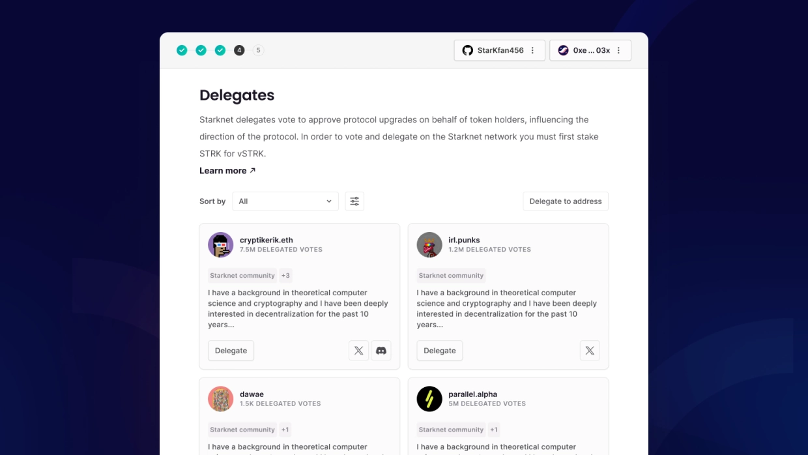
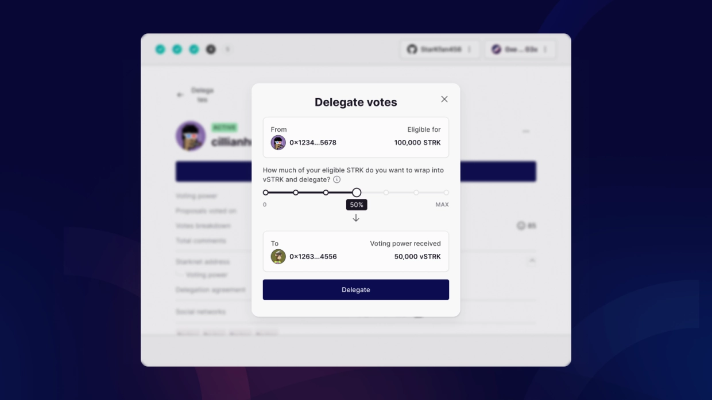
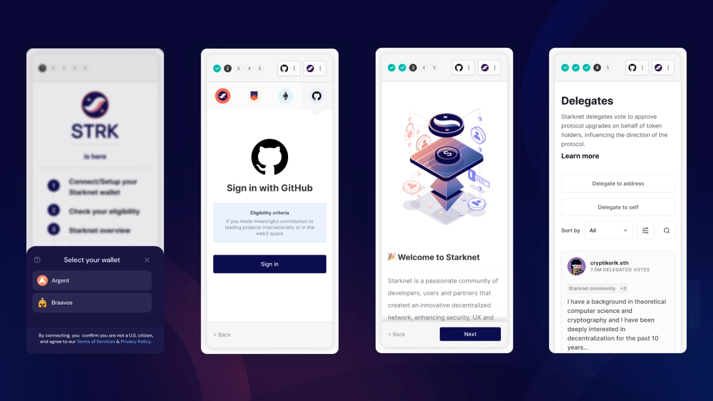

Starknet Provisions • Co-founder, Design and Research (Yūki studio)
Designing clarity into token distribution and governance

As co-founder of Yūki, a product design and research studio, we worked with teams across Web3 to translate emerging technical systems into usable products. A consistent focus in this work was helping people understand how complex onchain systems function, particularly where those systems shape value, ownership, and participation.
Starknet Provisions was part of Starknet’s first large scale token distribution. Airdrops are a critical moment in any crypto ecosystem, shaping early ownership and governance, but they are also difficult to design. Eligibility is based on fragmented historical activity, rules are often unclear, and outcomes can feel arbitrary to participants. At the time, Starknet had grown quickly, but users had little sense of how their activity translated into allocation. Most approached the experience with a simple question. Not just what did I receive, but does this make sense. This created a trust problem at system level.

I led design and research across the Provisions experience, working closely with Starknet teams to define how the system would be understood. The product was delivered as a responsive web application, supported by a dedicated website that housed the experience alongside educational content explaining the system and its underlying logic. Rather than treating this as a simple claim interface, we framed it as a sensemaking problem, helping users interpret their relationship to the network in a way that felt coherent and defensible. Research shaped the direction early. Analysis of wallet behaviour, community discussion, and previous airdrops showed that users were actively trying to reverse engineer the system, and when reasoning was not visible, trust broke down quickly and conversation moved off platform.

In response, we restructured the product around legibility. Working closely with protocol and engineering teams, we translated eligibility logic into something users could interrogate. Instead of a single outcome, the product exposed participation categories, contribution types, and time based weighting, making the system traceable rather than opaque. We designed the experience to move from summary to depth, allowing users to quickly understand their allocation while exploring the logic behind it where needed. Alongside this, we introduced a governance hub where users could explore delegates and assign voting power, extending the experience beyond distribution into participation.

The result was a structured experience that made a complex system more understandable at scale, showing that in onchain systems, clarity is fundamental to trust, not something added afterwards.

Outcomes
- Over 700 million STRK tokens distributed across approximately 1.3 million wallets
- Supported a large scale token distribution event without major product failure at launch
- Delivered a fully responsive web experience across desktop and mobile
- Improved understanding of allocation through structured, traceable breakdowns
- Reduced reliance on off platform interpretation during a high noise event
- Enabled governance participation through delegate discovery and token delegation
- Established a pattern for designing legible onchain distribution systems